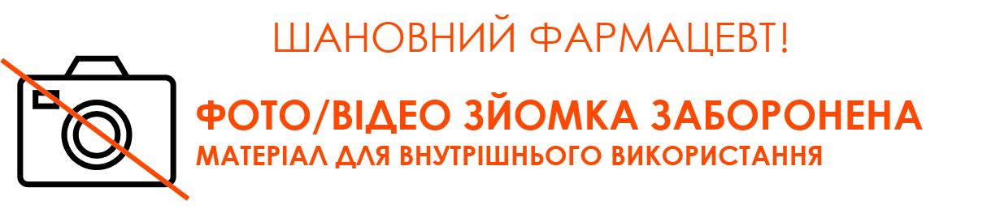

<div class="nw_slider_logo">
	
</div>
<div class="nw_slider_logo_left">
	
</div>
<div class="nw_slider_logo_right">
	
</div>
<section class="panel autoload" data-count="2" data-next="slide2" data-prev="">
	<div class="containerBlock">

		<div class="imgseven_blo">
			
			<div class="accessButton"><button>Даю згоду</button></div>
		</div>

	</div>
</section>
<style>
	.accessButton button {
		border: 1px solid #ff4800;
		padding: 2vh 3vh;
		font-size: 2vh;
		font-weight: 600;
		background-color: rgba(192, 0, 0, 0.1);
		cursor: pointer;
		transition: all 0.3s;
		color: #000;
	}

	.accessButton button:hover {
		background-color: #c13b07;
	}

	.next,
	.prev {
		display: none;
	}

	.imgseven_blo {
		position: absolute;
		top: 40%;
		width: 100%;
		text-align: center;

	}

	.imgseven_blo img {
		width: 50vw;
	}

	.g {
		display: none;
	}

	section {
		opacity: 0;
	}

	.panel {
		height: 100%;
		width: 100%;
		position: absolute;
		background-color: #fff;
		display: table;
	}

	.mainTitle span {
		font-size: 3.229vw;
		font-weight: 600;
		color: #3eb4e9;
		padding-bottom: 20px;
		display: inline-block;
		border-bottom: 2px solid #838383;
		margin-bottom: 50px;
	}

	.infoBlockCell {
		display: table-cell;
		vertical-align: middle;
		padding: 0px 18.75%;
		text-align: center;
	}

	.infoBlock {
		display: inline-block;
		padding: 6% 6% 6% 10%;
		background-color: #3eb4e9;
	}

	.infoElem {
		line-height: 1.2;
		display: flex;
		font-size: 1.875vw;
		font-weight: 300;
		color: #FFF;
		padding: 15px 0px;
		position: relative;
		align-items: center;
		width: 50%;
		float: left;
		text-align: left;
	}

	.infoElem span {
		position: relative;
		width: 50%;
		text-align: left;
	}

	.infoElem span:before {
		content: '';
		position: absolute;
		width: 30px;
		height: 1px;
		background-color: #fff;
		top: 50%;
		left: -50px;
	}

	.infoElem img {
		margin-right: 75px;
		width: 35px;
		height: 35px;
	}
</style>
<script>
	TweenMax.to('section', 0.5, {
		opacity: 1,
		ease: Linear.easeNone
	}, 0.5);
	var tl = new TimelineMax({
		paused: true
	});
	tl.fromTo('.main-no-foto', 1, {
		top: '+=10%',
		opacity: 0,
		scale: 0.5,
		ease: Back.easeOut
	}, {
		top: '0',
		opacity: 1,
		scale: 1,
		ease: Back.easeOut
	}, 0.5);
	tl.play();

	$('.accessButton button').on('click', function () {
		show_arrow_next_slide()
	});

	function show_arrow_next_slide() {
		TweenMax.to('section', 0.5, {
			opacity: 0,
			ease: Linear.easeNone
		});
		setTimeout(function () {
			nextSlide();
		}, 1000)
	}
</script>

<script>
	// // Автоматическое перелистывание слайда
	// var tl = new TimelineMax({
	// 	onComplete: function () {
	// 		setTimeout(function () {
	// 			TweenMax.to('section', 0.5, {
	// 				opacity: 1,
	// 				ease: Linear.easeNone
	// 			});

	// 			setTimeout(function () {
	// 				nextSlide();
	// 			}, 2000);
	// 		}, 000)
	// 	},
	// 	paused: true
	// });
	// tl.play();

	// $('.next').show('slow');
	// TweenMax.to('section', 0.5, {
	// 	opacity: 1,
	// 	ease: Linear.easeNone
	// });
	// var tl = new TimelineMax({
	// 	paused: true
	// });
	// tl.set('.panel .infoElem', {
	// 		bottom: '-50',
	// 		opacity: 0
	// 	})
	// 	.staggerTo('.panel .infoElem', 1, {
	// 		bottom: 0,
	// 		opacity: 1,
	// 		ease: Back.easeOut
	// 	}, 0.2);
	// tl.play();
</script>
